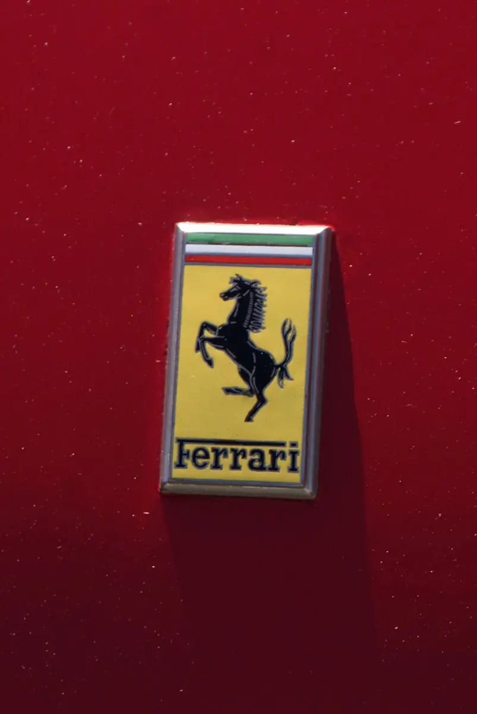
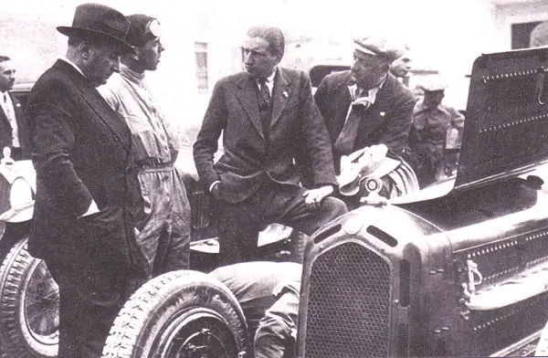
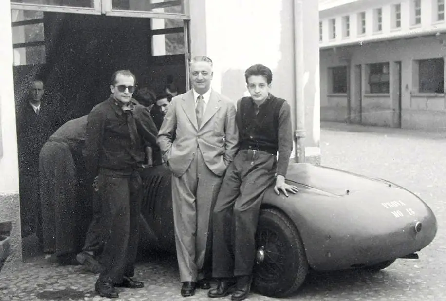
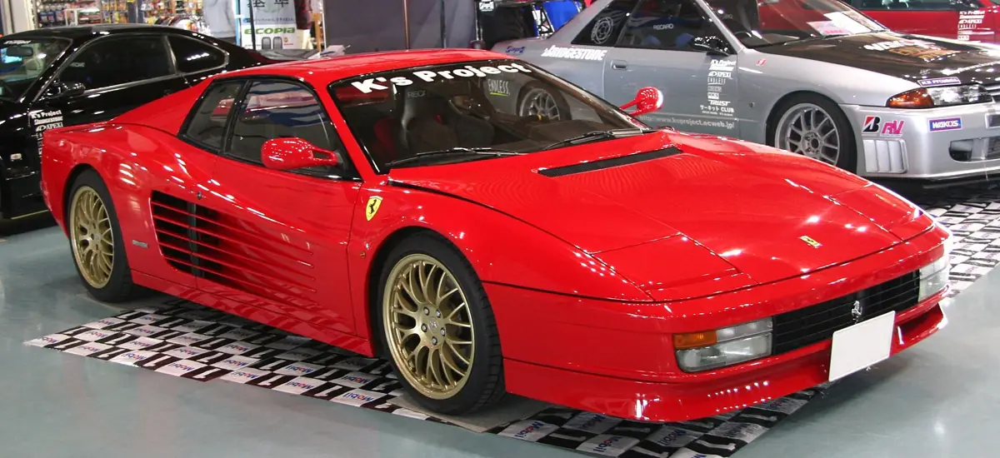
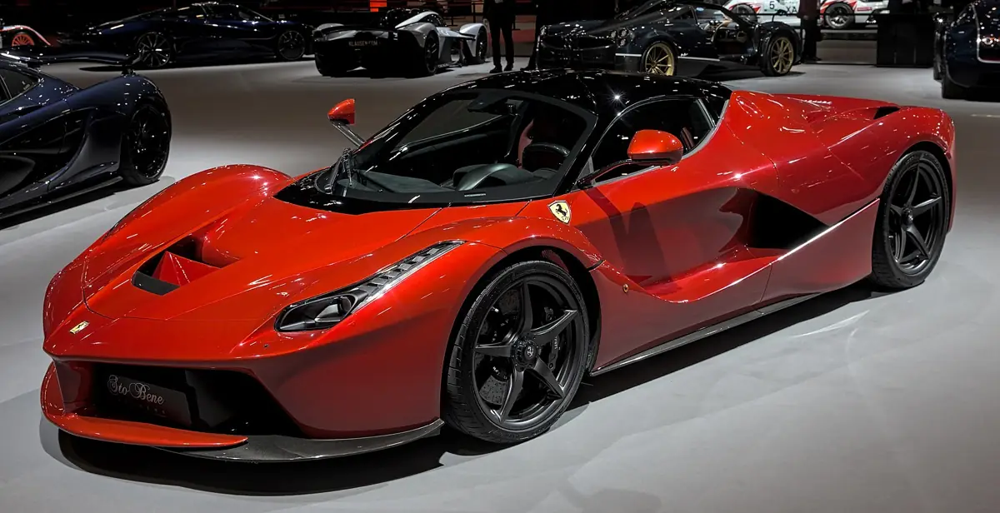

Par Motor › Historia del motor › Ferrari
Historia del motorFerrari: la historia completa

Este es el escudo más famoso del automovilismo. Un caballo negro sobre fondo amarillo.

Y este es el hombre que lo creó: Enzo Ferrari. Un hombre que, en realidad, no quería vender coches.
Los fabricaba solo para una cosa: pagar sus carreras.

Un hombre que dejó plantado a Henry Ford Segundo cuando quiso comprarle la empresa, y que desató una de las mayores rivalidades de la historia.

Esta es la historia de cómo un niño de Módena que soñaba con ser piloto acabó creando la marca de coches más famosa del mundo.
Ferrari: la historia completa.
1898 · Módena
Enzo Ferrari nace en 1898 en Módena, en el norte de Italia. Su padre tiene un pequeño taller de piezas metálicas.
Con diez años, su padre lo lleva a ver una carrera en Bolonia. Ese día decide lo que quiere ser: piloto.
Pero llega la Primera Guerra Mundial. En 1916 pierde a su padre y a su hermano, y él mismo cae gravemente enfermo durante el servicio militar.
Al terminar la guerra pide trabajo en Fiat, en Turín. Le dicen que no.
Pero no se rinde. Trabaja probando coches, empieza a correr y en 1920 entra en Alfa Romeo como piloto.
No es el piloto más rápido, pero es listo, tiene don de gentes y sabe convencer a los mejores mecánicos para que trabajen con él.
Francesco baracca
En 1923 gana una carrera en Rávena. Allí conoce a los padres de Francesco Baracca, el gran as de la aviación italiana, que había muerto en la guerra.
Baracca llevaba pintado en su avión un caballo negro encabritado. Según cuenta la historia, su madre le dijo a Enzo: ponga este caballo en sus coches, le dará suerte.
Enzo le añadió un fondo amarillo, el color de Módena. Así nace el 'Cavallino Rampante'.
En 1929 funda en Módena la Scuderia Ferrari. Todavía no fabrica coches: es un equipo que prepara y hace correr los Alfa Romeo.
Con pilotos como Tazio Nuvolari, la Scuderia gana carreras por toda Europa. En 1935, Nuvolari gana el Gran Premio de Alemania por delante de las potentísimas Flechas de Plata alemanas.
En 1932 nace su hijo Dino, y Enzo deja de pilotar. A partir de ahí su talento será otro: elegir a los mejores pilotos e ingenieros y sacarles el máximo.
En 1939 rompe con Alfa Romeo. El acuerdo de salida le prohíbe usar su nombre en coches de carreras durante cuatro años.
Así que crea otra empresa y construye su primer coche sin su nombre: el Auto Avio Costruzioni 815.
Maranello
Durante la Segunda Guerra Mundial traslada la fábrica a Maranello, un pueblo cercano. La bombardean, y la vuelve a levantar.

Y en 1947, por fin, arranca el primer coche con su nombre: el Ferrari 125 S, con un motor V12.
A Enzo se le atribuye una frase famosa: la aerodinámica es para quien no sabe hacer motores.
Ese mismo año gana su primera carrera, en Roma.
En 1949 gana las 24 Horas de Le Mans con el 166 MM.
Y en 1951 llega el momento más simbólico: en el Gran Premio de Gran Bretaña, un Ferrari gana por primera vez en Fórmula 1… y lo hace por delante de los Alfa Romeo, el equipo donde Enzo se había formado.
Se cuenta que Enzo, emocionado, dijo que sentía como si hubiera matado a su propia madre.
Al año siguiente, Alberto Ascari gana el campeonato del mundo con Ferrari.
Pero las carreras cuestan una fortuna
Pero las carreras cuestan una fortuna. Y Enzo encuentra la solución: vender coches de calle a clientes ricos.
Para él eran casi un mal necesario. Pero de ahí salieron joyas como la familia 250 y el 250 GTO, hoy uno de los coches más caros jamás subastados.
Enzo era duro y distante, y casi nunca iba a ver las carreras en persona. Siempre con sus gafas oscuras.
También hubo tragedias. En la Mille Miglia de 1957, el accidente del Ferrari del piloto español Alfonso de Portago causó la muerte de su copiloto, la suya y la de varios espectadores. La carrera desapareció.
Y en 1956, Enzo sufre el golpe más duro de su vida: muere su hijo Dino, con solo veinticuatro años, a causa de una enfermedad.
Enzo le dedicará su nombre a una serie de motores y de coches: los Dino.
1963
1963. Ford quiere ganar en las carreras y decide que lo más rápido es comprar Ferrari. Las negociaciones están muy avanzadas.
Pero cuando Enzo descubre que perdería el control de su equipo de carreras, rompe el acuerdo.
Henry Ford Segundo se lo toma como algo personal y ordena construir un coche capaz de derrotar a Ferrari en Le Mans.
No era fácil: Ferrari había ganado Le Mans seis años seguidos, de 1960 a 1965.
Ford gasta millones y fracasa en 1964 y en 1965.
Pero en 1966 los Ford GT40 terminan primero, segundo y tercero. Es la historia que cuenta la película 'Le Mans 66'.
En 1969, Enzo encuentra un socio que sí acepta sus condiciones: Fiat compra la mitad de la empresa y él conserva el control de las carreras.
Niki Lauda · 1975 y 1977
En los setenta, Niki Lauda devuelve a Ferrari a lo más alto con los títulos de 1975 y 1977.
Entre medias sufre un terrible accidente en Nürburgring, en 1976. Unas seis semanas después vuelve a subirse al coche.

En los ochenta, el Testarossa se convierte en el póster de toda una generación, gracias en parte a la serie 'Corrupción en Miami'.
En 1987 Ferrari cumple cuarenta años, y para celebrarlo presenta el F40: biturbo, ligerísimo y sin ayudas electrónicas.
Es el último Ferrari que aprueba el propio Enzo.
Enzo Ferrari muere el catorce de agosto de 1988, con noventa años.
Pocas semanas después, en el Gran Premio de Italia, en Monza, los Ferrari terminan primero y segundo. Es la única carrera de aquel año que no gana McLaren.
20 · Años sin título
Pero llegan años difíciles: Ferrari pasa veinte años sin un campeón del mundo de pilotos.
En 1996 ficha a Michael Schumacher y, con Jean Todt y Ross Brawn, construye un equipo imparable.
Del 2000 al 2004, cinco títulos de pilotos seguidos. La época más dorada de su historia.
Después llegó el título de Kimi Räikkönen en 2007, el último de pilotos de Ferrari hasta hoy.
En 2002 lanza un superdeportivo que lleva el nombre del fundador: el Enzo.

En 2013 llega LaFerrari, su primer superdeportivo híbrido.
En 2015 Ferrari sale a bolsa en Nueva York y después se separa del grupo Fiat. La marca que Enzo creó para pagar sus carreras es hoy una de las empresas de lujo más valiosas del mundo.
En 2025 ficha a Lewis Hamilton, siete veces campeón del mundo, para volver a ganar.
En todas las temporadas de f1 desde 1950
Además, es el único equipo que ha disputado todas las temporadas del Mundial de Fórmula 1 desde 1950.
De un chico al que Fiat no quiso contratar… a una marca que Fiat acabó comprando y que hoy vale más que muchos fabricantes enteros.
Enzo decía, según se cuenta, que el mejor Ferrari es siempre el siguiente.
Y ahora te toca a ti: ¿cuál es para ti el mejor Ferrari de la historia? ¿El F40, el 250 GTO, el Enzo…?
al Taycan. Nos vemos.
Más curiosidades de Ferrari
¿Cuánto vale hoy un Ferrari?
Consulta el precio justo de segunda mano de cualquier modelo, año por año, con el tasador gratis de Par Motor.
Ver precios por modelo →